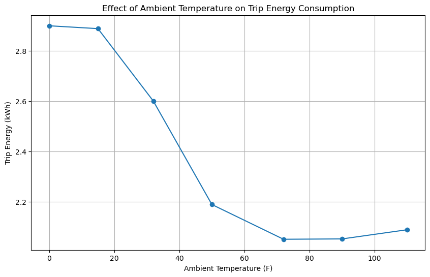
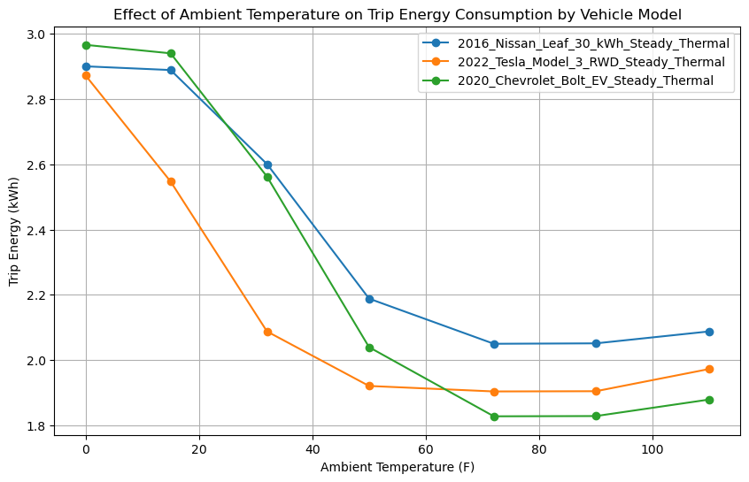

Ambient Temperature Example#
In this example, we'll demonstrate how to use RouteE Compass to plan routes that incorporate ambient temperature data for electric vehicles.
This builds off the Open Street Maps Example and assumes that we've already downloaded a road network, so be sure to check that one out first.
from nrel.routee.compass import CompassApp
import pandas as pd
import matplotlib.pyplot as plt
INFO:numexpr.utils:NumExpr defaulting to 4 threads.
First, we'll load the application from the pre-built configuration file that includes a traversal model that injects ambient temperature.
app = CompassApp.from_config_file("./denver_co/osm_default_temperature.toml")
graph edge list 0: /home/runner/work/routee-compass/routee-compass/docs/examples/denver_co/edges-compass.csv.gz: 48897it [00:00, 1651465.12it/s]
building adjacencies: 100%|██████████| 48897/48897 [00:00<00:00, 3514785.00it/s]
building adjacencies: 100%|██████████| 48897/48897 [00:00<00:00, 3510118.50it/s]
Basic Route With Mild Ambient Temperature#
Let's start with a basic route query for a 2016 Nissan Leaf 30 kWh with mild ambient temperature considerations and search for the shortest time route.
query = {
"origin_x": -104.969307,
"origin_y": 39.779021,
"destination_x": -104.975360,
"destination_y": 39.693005,
"model_name": "2016_Nissan_Leaf_30_kWh_Steady_Thermal",
"weights": {"trip_distance": 0, "trip_time": 1, "trip_energy_electric": 0},
"ambient_temperature": {"value": 72, "unit": "fahrenheit"},
}
result = app.run(query)
if "error" in result:
raise ValueError(f"Error: {result['error']}")
elif "route" not in result or result["route"] is None:
raise ValueError("No route found.")
else:
energy = result["route"]["traversal_summary"]["trip_energy_electric"]["value"]
print(
f"Ambient Temperature: {query['ambient_temperature']['value']} F, Trip Energy: {round(energy, 3)} kWh"
)
Ambient Temperature: 72 F, Trip Energy: 2.05 kWh
applying input plugin 1: 100%|██████████| 1/1 [00:00<00:00, 2635.43it/s]
applying input plugin 2: 100%|██████████| 1/1 [00:00<00:00, 798722.06it/s]
search: 100%|██████████| 1/1 [00:00<00:00, 28.21it/s]
Next, let's look at how the ambient temperature affects the energy consumption by running the same route query with different temperature settings.
temp_results = []
for temp in [0, 15, 32, 50, 72, 90, 110]:
query["ambient_temperature"] = {"value": temp, "unit": "fahrenheit"}
result = app.run(query)
if "error" in result:
raise ValueError(f"Error for temperature {temp} F: {result['error']}")
elif "route" not in result or result["route"] is None:
raise ValueError(f"No route found for temperature {temp} F.")
else:
energy = result["route"]["traversal_summary"]["trip_energy_electric"][
"value"
]
temp_results.append(
{
"ambient_temperature_f": temp,
"trip_energy_electric": energy,
"vehicle_model": query["model_name"],
}
)
print(f"Ambient Temperature: {temp} F, Trip Energy: {round(energy, 3)} kWh")
plot_df = pd.DataFrame(temp_results)
plt.figure(figsize=(10, 6))
plt.plot(
plot_df["ambient_temperature_f"], plot_df["trip_energy_electric"], marker="o"
)
plt.title("Effect of Ambient Temperature on Trip Energy Consumption")
plt.xlabel("Ambient Temperature (F)")
plt.ylabel("Trip Energy (kWh)")
plt.grid(True)
plt.show()
applying input plugin 1: 100%|██████████| 1/1 [00:00<00:00, 297088.53it/s]
applying input plugin 2: 100%|██████████| 1/1 [00:00<00:00, 1008064.56it/s]
search: 100%|██████████| 1/1 [00:00<00:00, 29.14it/s]
applying input plugin 1: 100%|██████████| 1/1 [00:00<00:00, 304228.78it/s]
applying input plugin 2: 100%|██████████| 1/1 [00:00<00:00, 1956947.12it/s]
search: 100%|██████████| 1/1 [00:00<00:00, 28.97it/s]
applying input plugin 1: 100%|██████████| 1/1 [00:00<00:00, 501504.50it/s]
applying input plugin 2: 100%|██████████| 1/1 [00:00<00:00, 2123142.25it/s]
search: 100%|██████████| 1/1 [00:00<00:00, 29.72it/s]
applying input plugin 1: 100%|██████████| 1/1 [00:00<00:00, 405844.16it/s]
applying input plugin 2: 100%|██████████| 1/1 [00:00<00:00, 1782531.25it/s]
search: 100%|██████████| 1/1 [00:00<00:00, 29.75it/s]
applying input plugin 1: 100%|██████████| 1/1 [00:00<00:00, 494071.16it/s]
applying input plugin 2: 100%|██████████| 1/1 [00:00<00:00, 1996008.00it/s]
search: 100%|██████████| 1/1 [00:00<00:00, 29.86it/s]
applying input plugin 1: 100%|██████████| 1/1 [00:00<00:00, 504286.44it/s]
applying input plugin 2: 100%|██████████| 1/1 [00:00<00:00, 2079002.25it/s]
search: 100%|██████████| 1/1 [00:00<00:00, 30.32it/s]
Ambient Temperature: 0 F, Trip Energy: 2.901 kWh
Ambient Temperature: 15 F, Trip Energy: 2.889 kWh
Ambient Temperature: 32 F, Trip Energy: 2.601 kWh
Ambient Temperature: 50 F, Trip Energy: 2.188 kWh
Ambient Temperature: 72 F, Trip Energy: 2.05 kWh
Ambient Temperature: 90 F, Trip Energy: 2.051 kWh
Ambient Temperature: 110 F, Trip Energy: 2.088 kWh
applying input plugin 1: 100%|██████████| 1/1 [00:00<00:00, 415973.38it/s]
applying input plugin 2: 100%|██████████| 1/1 [00:00<00:00, 1367989.00it/s]
search: 100%|██████████| 1/1 [00:00<00:00, 30.38it/s]

Next, let's take a look at the 2022 Tesla Model 3 and the 2020 Chevy Bolt and compare their energy consumption across the same range of ambient temperatures.
for model in [
"2022_Tesla_Model_3_RWD_Steady_Thermal",
"2020_Chevrolet_Bolt_EV_Steady_Thermal",
]:
for temp in [0, 15, 32, 50, 72, 90, 110]:
query["model_name"] = model
query["ambient_temperature"] = {"value": temp, "unit": "fahrenheit"}
result = app.run(query)
if "error" in result:
raise ValueError(f"Error for temperature {temp} F: {result['error']}")
else:
energy = result["route"]["traversal_summary"]["trip_energy_electric"][
"value"
]
temp_results.append(
{
"ambient_temperature_f": temp,
"trip_energy_electric": energy,
"vehicle_model": model,
}
)
print(
f"Model: {model}, Ambient Temperature: {temp} F, Trip Energy: {round(energy, 3)} kWh"
)
plot_df = pd.DataFrame(temp_results)
plt.figure(figsize=(10, 6))
for model in plot_df["vehicle_model"].unique():
model_data = plot_df[plot_df["vehicle_model"] == model]
plt.plot(
model_data["ambient_temperature_f"],
model_data["trip_energy_electric"],
marker="o",
label=model,
)
plt.title(
"Effect of Ambient Temperature on Trip Energy Consumption by Vehicle Model"
)
plt.xlabel("Ambient Temperature (F)")
plt.ylabel("Trip Energy (kWh)")
plt.grid(True)
plt.legend()
plt.show()
applying input plugin 1: 100%|██████████| 1/1 [00:00<00:00, 143204.94it/s]
applying input plugin 2: 100%|██████████| 1/1 [00:00<00:00, 1689189.25it/s]
search: 100%|██████████| 1/1 [00:00<00:00, 27.89it/s]
applying input plugin 1: 100%|██████████| 1/1 [00:00<00:00, 414250.22it/s]
applying input plugin 2: 100%|██████████| 1/1 [00:00<00:00, 1331557.88it/s]
search: 100%|██████████| 1/1 [00:00<00:00, 29.34it/s]
applying input plugin 1: 100%|██████████| 1/1 [00:00<00:00, 306091.22it/s]
applying input plugin 2: 100%|██████████| 1/1 [00:00<00:00, 1996008.00it/s]
search: 100%|██████████| 1/1 [00:00<00:00, 29.05it/s]
Model: 2022_Tesla_Model_3_RWD_Steady_Thermal, Ambient Temperature: 0 F, Trip Energy: 2.873 kWh
Model: 2022_Tesla_Model_3_RWD_Steady_Thermal, Ambient Temperature: 15 F, Trip Energy: 2.547 kWh
Model: 2022_Tesla_Model_3_RWD_Steady_Thermal, Ambient Temperature: 32 F, Trip Energy: 2.088 kWh
applying input plugin 1: 100%|██████████| 1/1 [00:00<00:00, 290107.34it/s]
applying input plugin 2: 100%|██████████| 1/1 [00:00<00:00, 1050420.12it/s]
search: 100%|██████████| 1/1 [00:00<00:00, 29.81it/s]
applying input plugin 1: 100%|██████████| 1/1 [00:00<00:00, 470809.78it/s]
applying input plugin 2: 100%|██████████| 1/1 [00:00<00:00, 2267573.75it/s]
search: 100%|██████████| 1/1 [00:00<00:00, 30.23it/s]
applying input plugin 1: 100%|██████████| 1/1 [00:00<00:00, 527983.12it/s]
applying input plugin 2: 100%|██████████| 1/1 [00:00<00:00, 2173913.00it/s]
search: 100%|██████████| 1/1 [00:00<00:00, 30.12it/s]
applying input plugin 1: 100%|██████████| 1/1 [00:00<00:00, 506585.59it/s]
applying input plugin 2: 100%|██████████| 1/1 [00:00<00:00, 2272727.25it/s]
search: 100%|██████████| 1/1 [00:00<00:00, 30.05it/s]
applying input plugin 1: 100%|██████████| 1/1 [00:00<00:00, 580383.06it/s]
applying input plugin 2: 100%|██████████| 1/1 [00:00<00:00, 1160092.88it/s]
search: 100%|██████████| 1/1 [00:00<00:00, 30.47it/s]
applying input plugin 1: 100%|██████████| 1/1 [00:00<00:00, 577034.06it/s]
applying input plugin 2: 100%|██████████| 1/1 [00:00<00:00, 1262626.25it/s]
search: 100%|██████████| 1/1 [00:00<00:00, 30.33it/s]
Model: 2022_Tesla_Model_3_RWD_Steady_Thermal, Ambient Temperature: 50 F, Trip Energy: 1.921 kWh
Model: 2022_Tesla_Model_3_RWD_Steady_Thermal, Ambient Temperature: 72 F, Trip Energy: 1.904 kWh
Model: 2022_Tesla_Model_3_RWD_Steady_Thermal, Ambient Temperature: 90 F, Trip Energy: 1.904 kWh
Model: 2022_Tesla_Model_3_RWD_Steady_Thermal, Ambient Temperature: 110 F, Trip Energy: 1.973 kWh
Model: 2020_Chevrolet_Bolt_EV_Steady_Thermal, Ambient Temperature: 0 F, Trip Energy: 2.966 kWh
Model: 2020_Chevrolet_Bolt_EV_Steady_Thermal, Ambient Temperature: 15 F, Trip Energy: 2.94 kWh
Model: 2020_Chevrolet_Bolt_EV_Steady_Thermal, Ambient Temperature: 32 F, Trip Energy: 2.562 kWh
Model: 2020_Chevrolet_Bolt_EV_Steady_Thermal, Ambient Temperature: 50 F, Trip Energy: 2.039 kWh
Model: 2020_Chevrolet_Bolt_EV_Steady_Thermal, Ambient Temperature: 72 F, Trip Energy: 1.828 kWh
Model: 2020_Chevrolet_Bolt_EV_Steady_Thermal, Ambient Temperature: 90 F, Trip Energy: 1.828 kWh
Model: 2020_Chevrolet_Bolt_EV_Steady_Thermal, Ambient Temperature: 110 F, Trip Energy: 1.879 kWh
applying input plugin 1: 100%|██████████| 1/1 [00:00<00:00, 484496.12it/s]
applying input plugin 2: 100%|██████████| 1/1 [00:00<00:00, 1218026.75it/s]
search: 100%|██████████| 1/1 [00:00<00:00, 30.49it/s]
applying input plugin 1: 100%|██████████| 1/1 [00:00<00:00, 545553.75it/s]
applying input plugin 2: 100%|██████████| 1/1 [00:00<00:00, 2272727.25it/s]
search: 100%|██████████| 1/1 [00:00<00:00, 30.65it/s]
applying input plugin 1: 100%|██████████| 1/1 [00:00<00:00, 583771.19it/s]
applying input plugin 2: 100%|██████████| 1/1 [00:00<00:00, 2267573.75it/s]
search: 100%|██████████| 1/1 [00:00<00:00, 30.63it/s]
applying input plugin 1: 100%|██████████| 1/1 [00:00<00:00, 604960.69it/s]
applying input plugin 2: 100%|██████████| 1/1 [00:00<00:00, 2493765.50it/s]
search: 100%|██████████| 1/1 [00:00<00:00, 30.51it/s]
applying input plugin 1: 100%|██████████| 1/1 [00:00<00:00, 616142.94it/s]
applying input plugin 2: 100%|██████████| 1/1 [00:00<00:00, 2320185.75it/s]
search: 100%|██████████| 1/1 [00:00<00:00, 30.22it/s]
